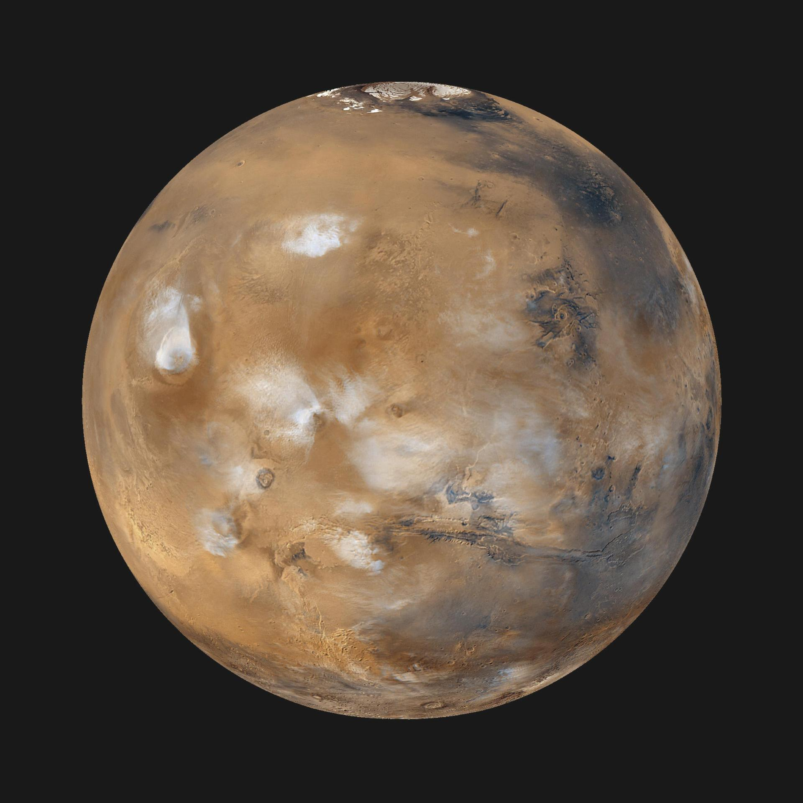

What's In Our System?
Many objets orbit the Sun. The largest of such objects are the eight planets. The first four planets; Mercury, Venus, Earth and Mars are catergoried as terrestrial planets. Terrestrial planets or rocky planets are celestial bodies that are composed of mostly silicate rocks or metals and has a solid surface. While their counterparts, gas gaints, are primarily made of hydrogen and helium. The gas giants in our solar system are Jupiter, Saturn, Uranus, and Neptune. Also known as the Jovian planets, which refers to Jupiter, thereby indicating that these planets are Juipter-like.
| The Eight Planets | |
|---|---|
| The first and smallest planet, Mercury is only slightly larger than the Moon. It takes Mercury 88 days to revolve around the Sun. The planet's surface is extremely hot and cold because Mercury has no atmosphere. It cannot retain the Sun's heat. | |
 |
Commonly referred to as "Earth's twin", Venus is the second planet in our solar system. Despite being the second closest to the Sun, it also holds the title of the hottest planet in the system. This is due to Venus's dense, carbon dioxide atmosphere. Venus is also the brightest planet in the sky, sometimes visible during the day. |
 |
Our home, the third planet from the Sun, is the biggest of the terrestrial planets and the fifth largest planet overall. Earth is the only planet in our system to have one moon and the only known astronomical object to harbor life. It helps that Earth is water world, a type of planet that contains a substantial amount of water in the form of oceans, either beneath the surface, as subsurface oceans, or on the surface. |
|  | Mars, the outermost terrestrial planet, can occasionally be seen from Earth in the night sky. Also called the "Red Planet", because iron minerals in the Martian dirt oxidize, or rust, causing the surface to look red. Mars is one of the most explored bodies in our solar system. In these NASA missions, Nasa found evidence that billions of years ago, Mars had a thicker atomsphere and was much warmer and wetter. |
 |
The most giant planet in the solar system is Jupiter. Over 90 satellites or moons are known to orbit Jupiter; however, most travel in irregular orbits quite far from the planet. These bodies originated closer to the Sun, most likely coming from the asteroid belt next to Jupiter. It seems that Jupiter kidnapped these objects. The innermost moons of Jupiter differ from these outer satellites. This group houses quite fascinating moons of the gas giant. Ganymede is the largest moon in the solar system, bigger than Mercury. It even has its own magnetic field. Europa is almost the same size as the Earth’s moon and is thought to have the potential to be habitable for some life. |
 |
Saturn is not the only planet in our Solar System with rings, yet none are as complex nor prominent as Saturn’s. There are seven main rings around the planet, some with large gaps between them. Like its gas giant counterpart, Jupiter, Saturn holds many moons; a total of 83 moons. |
 |
As the seventh planet from the Sun, Uranus is quite cold earning the title of "ice gaint". As an ice giant, Uranus doesn’t have a true surface. The planet is mostly swirling fluids. The ice gaint gets its blue-green color from methane gas in the atmosphere. Methane gas absorbs the red portion of the light, resulting in a blue-green color. Like Saturn, Uranus also has a ring system; albeit two compared to Saturn's seven. The inner system of nine rings consists mostly of narrow, dark grey rings. There are two outer rings: the innermost one is reddish like dusty rings elsewhere in the solar system, and the outer ring is blue like Saturn's E ring. A total of 13 rings orbit the ice gaint. It has 27 known moons, all named after lteray characters. Strangely, the planet has an axial tilt almost 90°, this causes extreme seasons on the planet. A quarter of each Uranian year, the Sun shines directly over each pole, plunging the other half of the planet into a 21-year-long, dark winter. |
 |
Neptune is our solar system’s 8th and final planet (if you don’t include Pluto). Like the previous gas giants, Neptune has no solid surface. Like its icy sibling, the planet’s upper atmosphere is frosted with frozen methane crystals. However, even though Neptune is more distant than Saturn, Neptune generates more heat from within. The heat powers weather patterns with swift winds and storms. Some storms can reach the size and shape of Jupiter’s Red Spot. |